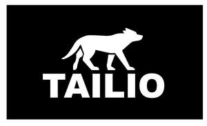

Trade Mark Journal No.2025/009 28 February 2025
UK00004160907 16 February 2025 (18,28)

- Class 18
- Dog leashes; Dog bellybands; Dog collars; Raincoats for pet dogs; Dog shoes; Dog clothing; Dog coats; Dog parkas; Animal leashes; Dog apparel; Cat collars; Clothing for dogs; Leashes for animals; Dog leads; Dog waste bag dispensers adapted for use with leashes; Rawhide chews for dogs; Collars for pets; Leather leashes; Leashes (Leather -); Electronic pet collars; Collars for cats; Coats for dogs; Horse collars; Pet clothing; Pet leads; Pet hair bows; Collars for animals; Collars of animals; Clothing for pets; Pets (Clothing for -); Collars for pets bearing medical information; Cat o' nine tails; Coats for cats; Fur; Reins [harness]; Blinders [harness]; Lunge reins; Harness straps; Straps (Harness -); Bridles [harness]; Harness; Blinkers [harness]; Animal harnesses; Harness for animals; Harness for horses; Muzzles; Bags; Duffel bags; Bags for carrying pets; Nose bags [feed bags]; Bags (Nose -) [feed bags]; Animal carriers [bags]; Bags for carrying animals; Diaper bags; Bum bags; Shoe bags; Bags for clothes; Nose bags; Carry-on bags; Hunting bags; Belt bags and hip bags; Leather bags; Nappy bags; Sling bags; Duffel bags for travel; Bucket bags; Feed bags for animals; Hiking bags; Camping bags; Beach bags; Bags for campers; Crossbody bags; Shoe bags for travel; Shoulder bags; Gym bags; Feed bags; Carrying bags; Cross-body bags; Carry-all bags; Waterproof bags; Leather shopping bags; Cloth bags; Messenger bags; Boot bags; Travel bags; Bags for travel; Drawstring bags; Souvenir bags; Cabin bags; Leather bags and wallets; Traveling bags; Athletic bags; Harnesses for animals; Harnesses; Bits for animals [harness]; Harness fittings; Fittings (Harness -); Leather for harnesses; Harness traces; Traces [harness]; Harness made from leather; Harness fittings of iron; Bits [harness]; Clothing for domestic pets; Garments for pets; Clothing for animals; Sports bags; Bags for sports; Bags for sports clothing; All-purpose sports bags.
- Class 28
- Pet toys; Toys for pet animals; Toys for pets; Toys and playthings for pet animals; Dog toys; Toys, games and playthings for pet animals; Toys and playthings for pets; Pet toys containing catnip; Toys for cats; Toys for domestic pets; Toys for dogs; Whack-a-mole toys for pets; Toys; Toy dogs; Pet toys made of rope; Toys for animals; Cuddly toys; Toy animals; Snuffle mats being dog toys; Stuffed animals [toys]; Plush toys; Toys for babies; Stuffed toy animals; Stuffed toys; Bath toys; Toy furniture; Toys for birds; Imitation bones being toys for dogs; Chewing toys for parrots; Outdoor toys; Toys for translating feelings of pets; Toy figurines; Plastic toys for use in the bath; Plastic toys; Bathtub toys; Radio-controlled toys; Stuffed and plush toys; Stuffed plush toys; Plush stuffed toys; Fluffy toys; Noisemakers [toys]; Toy fish; Rattles [toys]; Sports equipment for pets; Balls for play; Playing balls; Balls for playing games; Toy balls; Balls for games; Games (Balls for -); Ball launchers for pets; Playground balls; Play balloons; Balloons (Play -); Soccer balls; Tennis balls; Soft tennis balls; Sport balls; Tennis balls [not soft]; Soccer ball bags; Softball balls; Table-tennis balls; Bendy balls being toys; Sports balls; Tennis ball throwing machines; Tennis ball retrievers; Rubber balls; Indoor play apparatus for children; Tether balls; Playing bowls; Indoor play tents; Polo balls; Table tennis balls; Platform tennis balls; Play tunnels; Play tents; Disc toss toys; Soccer ball knee pads; Ball catchers; Toy food; Toy dolls; Toy strollers; Toy birds; Wind-up toys; Toy playsets; Cloth toys; Plastic character toys; Smart plush toys; Toy plants; Stuffed bean-filled toys; Electronic toys; Toys for sandpits; Mobiles [toys]; Water toys; Toy cars; Toy prams; Rubber character toys; Soft toys in the form of animals; Toy jewellery; Sand toys; Toys made of rubber; Wooden toys; Squeezable squeaking toys; Soft toys; Toy balloons; Toys made of metal; Fabric toys; Soft sculpture plush toys; Toy foam hands; Mechanical toys; Toys made of plastics; Bouncing toys; Windup toys; Wind-up walking toys; Toy whistles; Punching toys; Whistles [toys]; Whistling toys; Toys made of bamboo; Toys made of wood; Pull toys; Bendable toys; Plush toys with attached comfort blanket; Soft sculpture toys; Toy brooches; Toy hats; Toy gliders; Toy boats; Clothing for toy figures; Toy flowers; Toy sling planes; Toy tents; Sports equipment; Harnesses for use in sports; Supporters (Men's athletic -) [sports articles]; Tennis uprights [sports equipment]; Sleds [sports articles]; Sleds being sports articles.
Dexera LTD